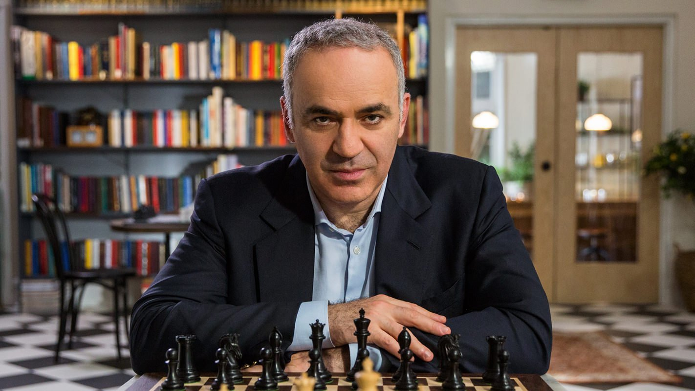

6 World Chess Champion
Back
“I don’t believe in psychology. I believe in good moves.”
― Bobby Fischer
“When you play Bobby, it is not a question if you win or lose. It is a question if you survive.”
- Boris Spassky

“At the end of the day, it's all about money.”
- Garry Kasparov
“To be a champion requires more than simply being a strong player; one has to be a strong human being as well.”
- Anatoly Karpov
“If you want to get to the top, there's always the risk that it will isolate you from other people.”
- Magnus Carlsen
“My hand was unwilling to move until my mind found a path.”
- Viswanathan Anand